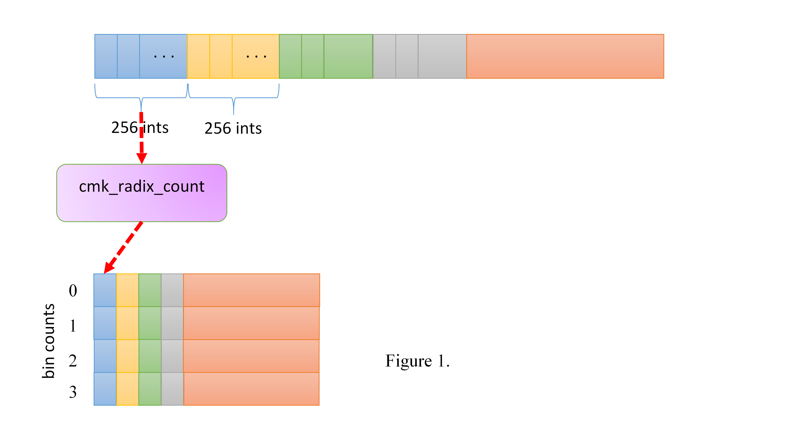
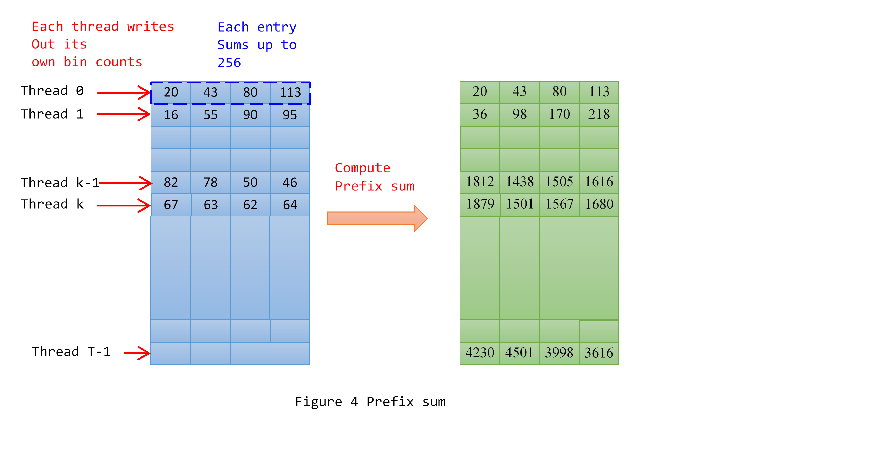
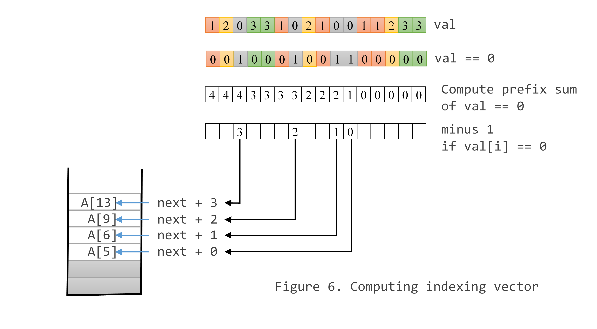
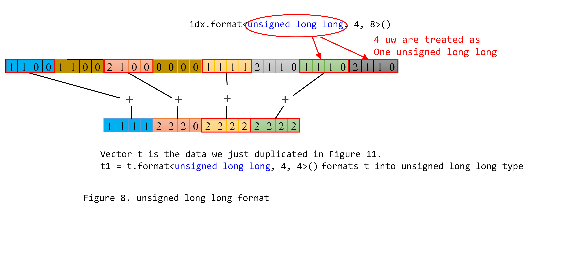

Tutorial 13. Kernel Deep-Dive: RadixSort¶
In this tutorial, we use RadixSort as another example to explain how to write effective kernel code.
High-level algorithm¶
The implementation is sorting unsigned int (32-bit) values. It can be easily adopted to sort signed integer values. The sorting starts from the least significant bits (LSB). In each iteration, we extract 2-bit values and put elements into 4 bins/buckets (BIN0, BIN1, BIN2 and BIN3) based on their 2-bit values, i.e., BIN0 for value 0. Once elements are binned, elements in each bin are written out to an output buffer from BIN0 to BIN4 with FIFO order. In the next iteration, the previously written output buffer is fed as the input data buffer and the subsequent 2 bits are extracted and the same binning is processed. For 32-bit integer, the whole process will repeat 16 times. The algorithm is simple. The goal is to divide the binning process so that the work can be done in parallel and efficiently mapped to Intel GEN HW threads. In this tutorial, we will present our implementation in details.
The implementation is composed of three parts.
- cmk_radix_count: which counts how many elements in each bin locally within each HW thread.
- prefix sum: which cumulates the number of elements of bins of all threads.
- cmk_radix_bucket: which reads a chunk of data, 256 elements, bins them into buckets, finally writes elements in each bucket to the output buffer based on the global positions calculated in step 2.
Worth to mention, we also have a version that handles 4 bits (16 bins) each iteration, which only takes 8 iterations. In one casual measurement, we observed that 4-bit version was 30% faster than 2-bit version. However, illustrating 16-bin would be harder on paper.
Parallel bin counting¶
In order to utilize the parallel processing engines in GPU, We apply Map-Reduce mechanism to this counting process. First, we divide input data into chunks and Map computing local bin_cnt for a data chunk to each HW thread. Then apply Reduce operation to calculate prefix sum for all local bin_cnt. cmk_radix_count basically reads in one chunk of data, 256 elements, and counts how many elements in each bin. The local bin counts for each thread are written out to a buffer as depicted in Figure 1.
{kind=link}
The following is the first part of the cmk_radix_count. Each time 32 elements are read. Each lane counts its own bing counts within the lane. Figure 2 illustrate the process.

_GENX_MAIN_ void cmk_radix_count(SurfaceIndex input, SurfaceIndex output, unsigned int n)
{
// h_pos indicates which 256-element chunk the kernel is processing
uint h_pos = get_thread_origin_x() + get_thread_origin_y()*MAX_TS_WIDTH;
// byte offset of the data chunk
unsigned int offset = (h_pos * BASE_SZ) << 2;
// to take advantage of SIMD architecture, we process counting 32
// elements as a batch rather than counting each element serially.
// Here we create a 4x32 counters. Each time, 32 elements are read.
// We can view them as 32 lanes of data. Each lane has its own
// dedicated bin counters.
matrix<unsigned short, 4, 32> counters;
// after we are done with 32-element batch counting, we perform sum
// reduction to calculate the bin counts for 256 elements. The results
// are in bin_cnt[]
vector<unsigned int, BIN_NUM> bin_cnt;
counters = 0;
unsigned int mask = 0x3 << n; // which 2 bits we want to extract
//#pragma unroll
for (int i = 0; i < BASE_SZ; i += 32) {
// read and process 32 elements each time
vector<unsigned int, 32> A;
cmk_read<unsigned int, 32>(input, offset + i * sizeof(unsigned int), A);
// extract n-th and (n+1)-th bits out.
// val is the bin number, data will be put. E.g., val[i] is bin # for A(i)
vector<unsigned int, 32> val = (A & mask) >> n;
// row(0) is for bin0 for all 32 lanes.
// merge operation to increase its own corresponding counters
// val == 0 indicate which lanes have 0. Only those channels are
// incrementing.
counters.row(0).merge(counters.row(0) + 1, val == 0);
counters.row(1).merge(counters.row(1) + 1, val == 1);
counters.row(2).merge(counters.row(2) + 1, val == 2);
counters.row(3).merge(counters.row(3) + 1, val == 3);
}
The final step performs reduction operation to sum all counts for each bin. The most intuitive way to get sum reduction for each bin is to invoke cm_sum intrinsic for each row. However, doing so leaves some performance on the table. Instead of using cm_sum, we perform sum reduction for all rows together. Doing so allows us to design the data layout of intermediate results so as to exploit vectorization cross rows. Here are the steps we do to achieve this goal.
The first step performs element-wise add for lower half and upper half data of each row. The generated asm code is shown as well. The result is stored in tmp_sum16 (r19-22). Each register (256 bits) holds an entire row, 16 unsigned shorts (as shown in Figure 3.a). Each row of matrices in Figure 2 has its own color.
matrix<unsigned short, 4, 16> tmp_sum16;
tmp_sum16 = counters.select<4, 1, 16, 1>(0, 0) + counters.select<4, 1, 16, 1>(0, 16);
// corresponding assembly code
add (16) r19.0<1>:w r17.0<8;8,1>:w r18.0<8;8,1>:w {Align1, H1} //#72:$55:
add (16) r20.0<1>:w r15.0<8;8,1>:w r16.0<8;8,1>:w {Align1, H1} //#72:$56:
add (16) r21.0<1>:w r13.0<8;8,1>:w r14.0<8;8,1>:w {Align1, H1} //#72:$57:
add (16) r22.0<1>:w r11.0<8;8,1>:w r12.0<8;8,1>:w {Align1, H1} //#72:$58:

The 2nd step adds upper half and lower half of each row of tmp_sum16. Because the intermediate result of the previous step is stored in 4x16 matrix, which occupies r19 to r22, Gen register regioning allows one source operand to select lower half of two rows (likewise for the upper half). For instance, r19.0<16;8,1>:w selects lower half of row 0 and 1 (as depicted in Figure 3.b). CM compiler generates only two add instructions, one each for two rows. the result of this step is stored in tmp_sum8 (4x8 matrix). Each row has only 8 unsigned short. Compiler lays out 2 rows in one register. e.g., row 0 and 1 in r23 and row 2 and 3 in r24.
matrix<unsigned short, 4, 8> tmp_sum8;
tmp_sum8 = tmp_sum16.select<4, 1, 8, 1>(0, 0) + tmp_sum16.select<4, 1, 8, 1>(0, 8);
// assembly code
add (16) r23.0<1>:w r19.0<16;8,1>:w r19.8<16;8,1>:w {Align1, H1} //#74:$60:
add (16) r24.0<1>:w r21.0<16;8,1>:w r21.8<16;8,1>:w {Align1, H1} //#74:$61:

reduction of 4 rows in this steps can be done concisely with one “add (16)” instruction. Source operand r23.0<8;4,1>:w selects lower half data (4 element for each row) for 4 rows (as shown in Figure 3.c)
matrix<unsigned short, 4,4> tmp_sum4;
tmp_sum4 = tmp_sum8.select<4, 1, 4, 1>(0, 0) + tmp_sum8.select<4, 1, 4, 1>(0, 4);
// assembly code
add (16) r25.0<1>:w r23.0<8;4,1>:w r23.4<8;4,1>:w {Align1, H1} //#76:$63:
{kind=link}
the final two steps do 4-to-2 and 2-to-1 reduction. reduction of 4-to-2 is done with one add(8) instruction. Region <4;2,1> allows us to choose the half data for each row (as shown in Figure 3.d).
matrix<unsigned short, 4, 2> tmp_sum2;
tmp_sum2 = tmp_sum4.select<4, 1, 2, 1>(0, 0) + tmp_sum4.select<4, 1, 2, 1>(0, 2);
bin_cnt = tmp_sum2.select<4, 1, 1, 1>(0, 0) + tmp_sum2.select<4, 1, 1, 1>(0, 1);
// assembly code
add (8) r2.4<1>:w r25.0<4;2,1>:w r25.2<4;2,1>:w {Align1, Q1} //#78:$65:
add (4) r26.0<1>:d r2.4<2;1,0>:uw r2.5<2;1,0>:uw {Align1, Q1} //#79:$67:

Global prefix sum¶
Binning needs to maintain global ordering. Namely, when elements are written out to the output buffer, elements in bin0 must happen before bin1, bin1 ahead of bin2, …, etc. Furthermore, elements in a bin are written out in FIFO order. Maintaining the order is the fundamental part of the algorithm. Radix sort is based on the assumption that if two numbers differ only on the extracted bits we are currently examining, then the binning process will put them into the right order — the smaller value is in a smaller bin number. The relative order for the two numbers is therefore properly maintained. If the two numbers differ on some higher bit positions that are not yet examined, it doesn’t matter what we do now (i.e., which bins we put them). Later binning iteration will put them into the right relative order. How to maintain the global ordering while mapping/distributing the work to GPU threads is the essential design of our implementation.
We want to apply Map method to the binning process so that all threads can do their binning independently. Prefix sum table is the essential data structure for each thread to look up the starting memory address to where it should write the data elements of its local bins/buckets. For a given data size of 2^N, T = 2^(N-8) cmk_bin_count threads are launched (each thread counts 256 elements). The output table from cmk_bin_count has T entries (as shown in Figure 4 blue shaded table). Each entry has four counts, one for each local bin count. For each bin, an entry i of the prefix sum table simply cumulatively sums up all entries from 0 to I (light green shaded table). For simplicity of the example, we just perform perfix-sum on CPU. If you are interested in offloading prefix-sum to GPU, we have another example and tutorial about that.
From the prefix sum table, we know how many elements of the input data are in each bin (i.e., Thread T-1 entry: 4230, 4501, 3998, 3616). For a thread K, its previous entry (k-1) tells how many cumulated elements from its prior threads (0 to K-1).
{kind=link}
Parallel binning¶
With the prefix sum table ready, the binning process (done by cmk_radix_bucket) can be mapped to HW threads and done completely in parallel. Similar to cmk_radix_count, we divide the data into chunks (256 elements each) and assign them to cmk_radix_bucket threads. cmk_radix_bucket with thread id (x,y) reads in the same data chunk read by cmk_radix_count (x,y). Take Thread K in Figure 4 as an example. Given Thread T-1 and K-1 entries, Thread K can calculate the starting addresses to where its local bins will be written (as shown in Figure 5). T-1 entry tells there are 4230, 4501, 3998 and 3612 elements in global bin0, bin1, bin2 and bin3, respectively. (K-1)th entry tells how many elements from thread 0 to K-1. For example, the starting addresses for thread K to write out its local bin data are
Bin0: PrefixSum[K-1][0] // 1812
Bin1: PrefixSum[T-1][0] + PrefixSum[K-1][1] // 4230 + 1438
Bin2: PrefixSum[T-1][0] + PrefixSum[T-1][1] + PrefixSum[K-1][2] // 4230 + 4501 + 1505
Bin3: PrefixSum[T-1][0] + PrefixSum[T-1][1] + PefixSum[T-1][2] + PrefixSum[K-1][3]

The following is the complete binning kernel.
_GENX_MAIN_ void cmk_radix_bucket (
SurfaceIndex input, // input data to be sorted
SurfaceIndex table, // Prefix sum table
SurfaceIndex output, // output for binning result
unsigned int bin0_cnt, // global bin0 count,
unsigned int bin1_cnt, // global bin1 count
unsigned int bin2_cnt, // global bin2 count
unsigned int bin3_cnt, // global bin3 count
unsigned int n) // binning based n-th and (n+1)-th bits
{
// h_pos indicates which 256-element chunk the kernel is processing
uint h_pos = get_thread_origin_x() + get_thread_origin_y()*MAX_TS_WIDTH;
// byte offset of the data chunk
unsigned int offset = (h_pos * BASE_SZ) << 2;
vector<unsigned int, BIN_NUM> prefix = 0;
// loading PrefixSum[h_pos-1]
// the information tells how many cumulated elements from thread 0 to
// h_pos-1 in each bin. Thread0 has no previous prefix sum so 0 is
// initialized.
if (h_pos != 0) {
read(table, ((h_pos-1)*BIN_NUM) << 2, prefix);
}
unsigned int mask = 0x3 << n;
// the location where the next 32 elements can be put in each bin
vector<unsigned int, BIN_NUM> next;
next[0] = prefix[0];
next[1] = bin0_cnt + prefix[1];
next[2] = bin0_cnt + bin1_cnt + prefix[2];
next[3] = bin0_cnt + bin1_cnt + bin2_cnt + prefix[3];
for (int i = 0; i < BASE_SZ; i += 32) {
// read and process 32 elements at a time
vector<unsigned int, 32> A;
cmk_read<unsigned int, 32>(input, offset + i * sizeof(unsigned int), A);
// calculate bin # for each element
vector<unsigned short, 32> val = (A & mask) >> n;
vector<unsigned int, 4> bitset;
// val has bin # for each element. val == 0 is a 32-element Boolean vector.
// The ith element is 1 (true) if val[i] == 0, 0 (false) otherwise
// cm_pack_mask(val == 0) turns the Boolean vector into one unsigned
// 32-bit value. The i-th value is the corresponding i-th Boolean value.
bitset(0) = cm_pack_mask(val == 0);
bitset(1) = cm_pack_mask(val == 1);
bitset(2) = cm_pack_mask(val == 2);
bitset(3) = cm_pack_mask(val == 3);
// calculate how many elements in each bin
vector<unsigned short, 4> n_elems = cm_cbit<unsigned int>(bitset);
// calculate prefix sum
// For each bin, there is a corresponding "next" index pointing to
// the next available slot. "val == 0" tells us which A elements
// should be put into bin0. From position 0 to 31,
// if val[i] == 0 then A[i] will be placed into bin0[next],
// then bin0[next+1], bin0[next+2], etc.
// For instance, "val == 0": 0 0 1 0 0 0 1 0 0 1 1 0 0 0 0 0 -- LSB
// A[5] is placed in bin0[next], A[6] in bin0[next+1],
// A[9] in bin0[next+2], A[13] in bin0[next+3]
// Calculate prefix sum for "val == 0" we get
// prefix_val0 = 4 4 4 3 3 3 3 2 2 2 1 0 0 0 0 0 --- LSB
// the 5, 6, 9 and 13-th value of "next + prefix_val0 - 1" is the locations
// where A[5], A[6], A[9] and A[13] will be stored in bin0.
matrix<unsigned short, 4, 32> idx;
idx.row(0) = (val == 0);
idx.row(1) = (val == 1);
idx.row(2) = (val == 2);
idx.row(3) = (val == 3);
// step 1 of prefix-sum. Sum up every pair of even and odd elements
// and store the result in even position. In each step, we process 4 bins
idx.select<4, 1, 16, 2>(0, 1) += idx.select<4, 1, 16, 2>(0, 0);
// step 2
idx.select<4, 1, 8, 4>(0, 2) += idx.select<4, 1, 8, 4>(0, 1);
idx.select<4, 1, 8, 4>(0, 3) += idx.select<4, 1, 8, 4>(0, 1);
// step 3
// for a vector: 15 14 13 12 11 10 9 8 7 6 5 4 3 2 1 0
// this step adds 3 to 4, 5, 6, 7 and adds 11 to 12, 13, 14, 15.
// replicate<16,8,4,0>(0,3) duplicates 3rd, 11th, 19th, 27th 4 times each
matrix<unsigned short, 4, 16> t;
t = idx.replicate<16, 8, 4, 0>(0, 3);
// Gen ISA describes only one destination stride. That is,
// one instruction cannot write 4 consecutive elements and then write
// another consecutive 4 elements with a stride distance. Due to this
// restriction, a straightforward implementation has to break step 3
// into 4 instructions, each adding 4 elements. we format matrix of
// uw type into unsigned long long type. One unsigned long long has 4 uw.
// The maximum value of prefix sum is 32, only i.e., every bit is set.
// No overflow will happen during prefix sum computation. One long long
// type add is equivalent to 4 uw additions. 16 additions of uw types
// can be collapsed into 4 qword additions. What is more, one add
// instruction can express those 4 qword additions without running into
// the destination stride restriction.
matrix_ref<unsigned long long, 4, 8> m1 = idx.format<unsigned long long, 4, 8>();
matrix_ref<unsigned long long, 4, 4> t1 = t.format<unsigned long long, 4, 4>();
m1.select<4, 1, 4, 2>(0, 1) += t1;
#pragma unroll
for (int j = 0; j < 4; j++) {
// step 4
idx.select<1, 1, 8, 1>(j, 8) += idx(j, 7);
idx.select<1, 1, 8, 1>(j, 24) += idx(j, 23);
// step 5
idx.select<1, 1, 16, 1>(j, 16) += idx(j, 15);
}
// calculate the positions of elements in their corresponding bins
vector<unsigned int, 32> voff;
// add bin0 element offsets to the bin0-batch-start
voff.merge(idx.row(0) + next(0) - 1, val == 0);
// add bin1 element offsets to the bin1-batch-start
voff.merge(idx.row(1) + next(1) - 1, val == 1);
// add bin2 element offsets to the bin2-batch-start
voff.merge(idx.row(2) + next(2) - 1, val == 2);
// add bin3 element offsets to the bin3-batch-start
voff.merge(idx.row(3) + next(3) - 1, val == 3);
// scatter write, 16-element each
write(output, 0, voff.select<16, 1>(0), A.select<16,1>(0));
write(output, 0, voff.select<16, 1>(16), A.select<16,1>(16));
// update the next pointers, move onto the next 32 element
next += n_elems;
}
}
Figure 6 explains how to find the position of each element in its bin. A prefix sum of a vector is computed, then added upon the “next” of the bin.
{kind=link}
Now more details on how prefix sum of a vector is computed. It takes log(N) steps to complete. For 32 elements, we need 5 steps. Arrow indicate that head and tail are added and the result is stored in the head location. See Figure 7.

In step 3, we format matrix of uw type into unsigned long long type. One unsigned long long has 4 uw. The maximum value of prefix sum is 32, only i.e., every bit is set. No overflow will happen during prefix sum computation. That is, one long long type add is equivalent to 4 uw additions. 16 additions of uw types can be collapsed into 4 qword additions. What is more, one add instruction can express those 4 qword additions without running into the destination stride restriction.
{kind=link}
The following is the generated code for step 3 of sum reduction.
// t = idx.replicate<16, 8, 4, 0>(0, 3);
mov (16) r2.0<1>:w r12.3<8;4,0>:w {Align1, H1, NoMask} //#158:$78:
mov (16) r7.0<1>:w r14.3<8;4,0>:w {Align1, H1, NoMask} //#158:$79:
mov (16) r8.0<1>:w r16.3<8;4,0>:w {Align1, H1, NoMask} //#158:$80:
mov (16) r9.0<1>:w r18.3<8;4,0>:w {Align1, H1, NoMask} //#158:$81:
// m1.select<4, 1, 4, 2>(0, 1) += t1;
add (4) r12.1<2>:q r12.1<2;1,0>:q r2.0<4;4,1>:q {Align1, Q1, NoMask} // for bin0
add (4) r14.1<2>:q r14.1<2;1,0>:q r7.0<4;4,1>:q {Align1, Q1, NoMask} // for bin1
add (4) r16.1<2>:q r16.1<2;1,0>:q r8.0<4;4,1>:q {Align1, Q1, NoMask} // for bin2
add (4) r18.1<2>:q r18.1<2;1,0>:q r9.0<4;4,1>:q {Align1, Q1, NoMask} // for bin3